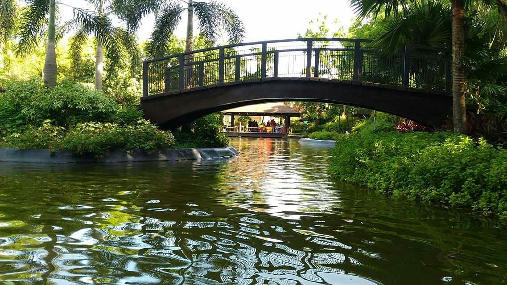
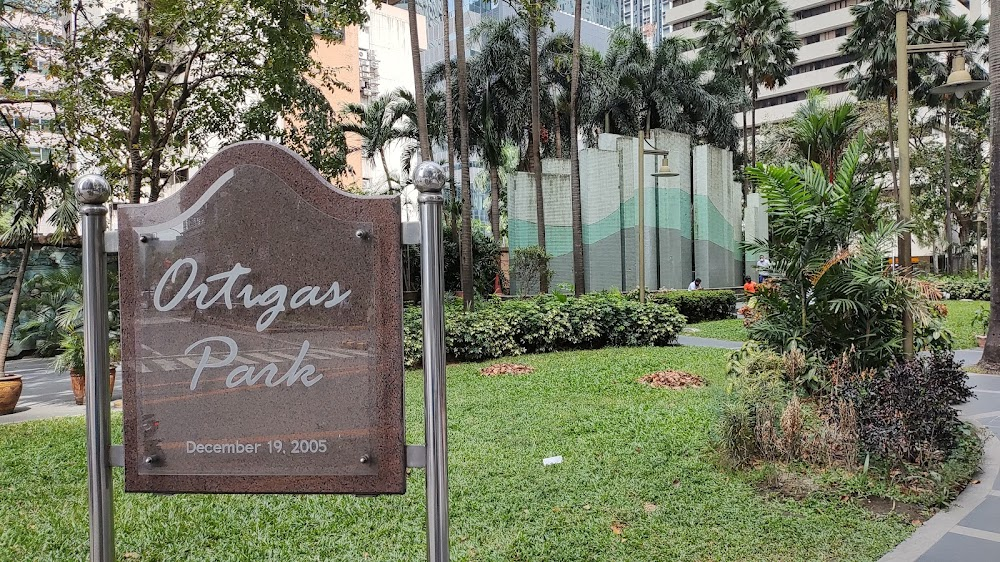

A popular eco-park in Pasig City featuring gardens, mini zoo, boating lagoon, playgrounds and picnic areas. Perfect for family bonding and outdoor fun.
Located near the City Hall, this green space is great for walking, exercising and relaxing in the middle of the city.

A small peaceful park in Ortigas Center ideal for quick breaks, jogging and casual meetups.

A modern township with landscaped open spaces and walkable zones, perfect for strolls and outdoor relaxation.